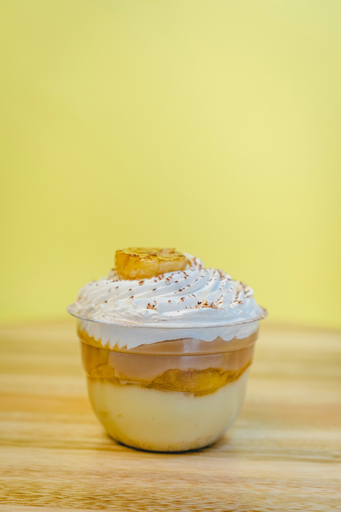

Banana Pudding Protein Yogurt Cups

Description
These banana pudding protein yogurt cups are good to have ready for an on-the-go snack. Greek yogurt, with added protein powder, banana pudding mix, nilla wafers, and banana slices tastes just like dessert, but won't slow you down.
Ingredients
- 1 (5.3 ounce) vanilla or plain Greek yogurt
- 1/2 scoop protein powder, or more to taste
- 2 teaspoons instant banana flavored pudding
- 6 vanilla wafers, such as Nabisco Nilla Wafers
- banana slices, for serving
Steps
- Remove lid from yogurt cup; gradually stir in protein powder and pudding mix until smooth and well combined.
- Press vanilla wafers into the pudding cup. Cover with plastic wrap and refrigerate at least 2 hours and up to overnight.
- Top with banana slices before serving.
Home